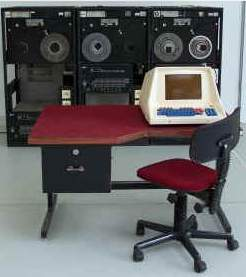

Ceglédi SZC Közgazdasági és Informatikai Technikum
A MERA 9150 mely lengyel gyártmányú számítógép 1970-ben jelent meg. Az eszközt a képernyő jobb szélén láthatnak a képet az NJSZt-től kértük.A feldolgozandó adatokat az eszköz mágneslemezre rögzítette.Legfeljebb 32 terminált tudott ellátni a vezérlő miniszámítógép.
Lengyelországban gyártották Nagyjából 1970-végétől a megjelenésétől 2000-ig működtek.Technológia: Kis alkatrész-sűrűségű IC tokosEzt a tipust Adatrögzítésre, javításra és adat előfeldolgozásra használták. Az oktató központi monitorának a master monitornak tartalma az első 16 terminálon jelenhettek meg ezt vízhangfungcióval oldották meg. Üzemi helyek: számítóközpont nagygépei mellett front-end rendszerekMegtekinthető: Informatika Történeti Kiállítás

Felépítés
A rendszert Nova 1200 mini számítógép vezérelte:
Központi egység
vezérmű:n.a.
főtár: 32 Kszó/16 bit, ciklusidő 1,2 μs
számolómű: n.a.
Periféria például MERA 7951 OM
Háttértárak:
1 – 4 egylemezes, nem cserélhető kazetta
opcionálisan: 1-4 ODRA (ICL) vagy IBM 7-9 sávos mágnesszalagos egység
külső eszközök: legfeljebb 32 adatrögzítő terminál, saját billentyűzettel és monitorral
Működés:
Front-end funkciónak készült a rendszer.
Tipikus adatkezelési funkciók:
egyedi karakterek, illetve adatmezők bevitelének ellenőrzése, javítása, módosítása
adatok ellenőrzése kimenet előtt
nagygépes igények szerinti előfeldolgozása az anyagoknak
önálló számítógépként is lehetett használni a fő munkaállomást.
A monitorok csak 32 sor, 40 chpl felbontásban működtek szöveges módban.
Program Készlet
Általános programok
Konkrét adatok híján csak feltételezni lehet, hogy a funkciók végrehajtásához létezniük kellet hatékony szövegszerkesztő programoknak
Érdekességek
A terminálokat mind helyi, mind táv-adatátviteli hálózatokon keresztül lehetett a központi géphez kapcsolni.
A KEY TO DISC rendszerek családjába tartozik. Közvetlenül a mágnesszalagra viszi az adatokat.
A MERA egy önálló miniszámítógép ként is működött, az előnye hogy a mágneslemezre rögzített ellenőrizni és javítani lehetett és utána közvetlenül fel lehetett dolgozni a nagy számítógépen is.